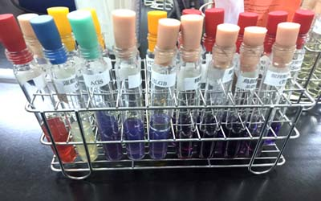
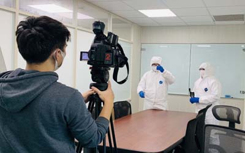
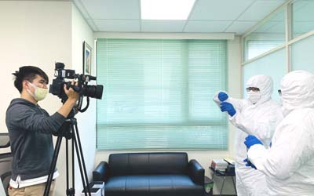

為何選擇世屋細菌病毒消毒
 我們具有40多年環境治理經驗，深知細菌消毒絕對不是噴一些藥劑就可去除，藥劑可短暫去除，但只治標不治本，真正想降低感染率則是要知道如何降低感染才能控制。
我們具有40多年環境治理經驗，深知細菌消毒絕對不是噴一些藥劑就可去除，藥劑可短暫去除，但只治標不治本，真正想降低感染率則是要知道如何降低感染才能控制。

依據美國CDC之定義：院內感染是指病患在住院期間得到的感染，而此感染在入院時並未發生。
 隨著交通資訊的進步，人們接觸日趨頻繁，相對地細菌的傳播也比以前快速許多，近來醫療院所常被視為細菌傳染途徑的重要場所，越是口碑好的院所，人們出入也越多，所傳播的細菌相對的也是成正比，一般醫院的感染率在3-5%之間，台灣地區各大院所每年都就有院內感染的案例，只是感染的程度不同，在醫藥業開發多種的抗生素，臨床實驗中的感染治療有極大的貢獻，但菌種的再生與變種所產生的抗藥性或是定植抵抗力(Colonization Resistance)失去平恆，則是醫生最不願見到的。在醫院以 MRSA（抗藥性金黃色葡萄球菌)，是最常見的病源菌，近年來還有更強的超級AB菌，因此在醫院如果本身有傷口，必須先將傷口包紮好，避免傷口接觸，也不要隨意揉眼，及抓癢等動作，避免細菌從皮膚傷口侵入，在醫院感染最高場所以加護病房為主，又因侵入性治療(如：插管)更是大增加感染的機率，因此病況復原在醫生許可下，如能儘早回家休養則能減少在院內被感染的機會。
隨著交通資訊的進步，人們接觸日趨頻繁，相對地細菌的傳播也比以前快速許多，近來醫療院所常被視為細菌傳染途徑的重要場所，越是口碑好的院所，人們出入也越多，所傳播的細菌相對的也是成正比，一般醫院的感染率在3-5%之間，台灣地區各大院所每年都就有院內感染的案例，只是感染的程度不同，在醫藥業開發多種的抗生素，臨床實驗中的感染治療有極大的貢獻，但菌種的再生與變種所產生的抗藥性或是定植抵抗力(Colonization Resistance)失去平恆，則是醫生最不願見到的。在醫院以 MRSA（抗藥性金黃色葡萄球菌)，是最常見的病源菌，近年來還有更強的超級AB菌，因此在醫院如果本身有傷口，必須先將傷口包紮好，避免傷口接觸，也不要隨意揉眼，及抓癢等動作，避免細菌從皮膚傷口侵入，在醫院感染最高場所以加護病房為主，又因侵入性治療(如：插管)更是大增加感染的機率，因此病況復原在醫生許可下，如能儘早回家休養則能減少在院內被感染的機會。
在感染防制中，院內環境有害微生物之事前的預防，降低感染途徑工作的第一線人員，尤其清潔人員，在院內感染防制中，清潔人員的裝備及專業更顯得特別重要，一個優良醫療院所，其院內環境感染防制及清潔消毒，是以預防重於治療的觀念為主。

院內感染的原因很多，專業的清潔防制細菌病毒是著重於環境空間上，保持醫院低菌狀況，是讓病人迅速康復最佳良藥之一，遠在1867年，著名的Lister J.(李斯特在英國醫學協會上就已提出外科抗菌理論，早已證實此觀點。）據英國2008年研究，三分之一的血壓計套袖口有梭狀芽胞桿菌，因此許多看不見的殺手都隱藏在醫院中。
目前國內衛生保健大部份預算都用於護理，但是以台灣2300萬人口計算，每年預估有5%人住院，一年就有115萬人住院，以台灣估算院內感染率5%計算(含漸接感染實際數值則會遠高於此)，那就有近6萬人被感染，如果又以NI (nosocomial infection)死亡率10%計算，那每年至少將有6000名病人是受院內病毒直接感染因素死亡，歐盟每年則是有三百萬人受院內有關的感染，約五萬人因此死亡，除了造成家庭不幸外，還浪費醫療資源，加重醫療預算。
在許多證據顯示，院內感的的因素包含了微生物毒性、數量，及宿主的抵抗力有關，因此睡眠充足，飲食均恆是最基本能保護自己的條件。
目前國內現行院感分類：泌尿道感染、血流感染、肺炎、肺炎以外之下呼吸道、外科部位感染、皮膚及軟組織感染、心臟血管系統感染、骨及關節感染、中樞神經系統感染、五官感染、腸胃系統感染、生殖系統感染、全身性感染等項目，其中自從新冠肺炎崛起，也造成大家對呼吸道感染的重視。

A.接觸傳染：包含直接與間接接觸，其中人員、器械、物品...等等都是可能被污染導致傳染病原，避免揉眼睛、挖鼻孔等行為，因為黏膜組織容易受到感染，除非必要，盡量少接觸院內物品，醫院可是各類病源的窩藏地，因此去醫院後及回到家切記要洗手。
B.飛沫傳染：正確帶醫療口罩，以及丟棄使用過的口罩是最佳減少感染機會的方式。飛沫是以噴嚏、咳嗽等較大顆粒粒子，在靜止狀態下傳染距離大約在1-3米間，打噴嚏或咳嗽時需摀住口鼻或配戴口罩。
C.空氣傳染：灰以密閉空間為主，如電梯、人潮多且通風不良處，因飛沫核等因素，易造成呼吸道感，自己準備口罩，可減少感染機會，目前已有證據顯示新冠病毒可經由空氣傳染(氣泡膜方式)。
D.食物、水源：食物本身及容器及制造過程及自來水塔管路，甚至藥品的感染等等都有可能使病毒細菌間接金入體內。
E.生物媒介：蟑螂、蚊子、蒼蠅、跳蚤、老鼠、蝙蝠、野生動物等等，以蝙蝠來說所帶之細菌病毒非常多。
一般而言在醫院大家會認為電梯按鍵或是門把扶手細菌最多，但以本公司20餘年測試，實際經驗是水槽與清潔抹布、拖把等工具其細菌最多。
 我們具有40多年環境治理經驗，深知細菌消毒絕對不是噴一些藥劑就可去除，藥劑可短暫去除，但只治標不治本，真正想降低感染率則是要知道如何降低感染才能控制。
我們具有40多年環境治理經驗，深知細菌消毒絕對不是噴一些藥劑就可去除，藥劑可短暫去除，但只治標不治本，真正想降低感染率則是要知道如何降低感染才能控制。